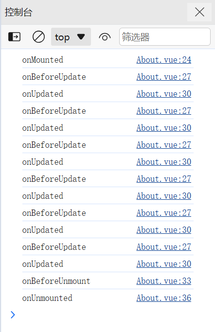

组件的一生：创建 → 挂载 → 更新 → 销毁；又细分为前、后两个阶段
开发者根据组件的状态在特定阶段执行特定的操作
基本使用：引入对应的包 → 执行函数 → 传入回调

Lifetime
onBeforeMount()
注册一个钩子，在组件被挂载之前被调用
初始化；拉取/操作数据；但是 DOM还未就绪
import { onBeforeMount } from 'vue'
onBeforeMount(() => {
console.log("onBeforeMount");
})
onMounted()
注册一个回调函数，在组件挂载完成后执行：DOM已就绪
多用于项目初始化
可以执行多个，但是仅仅执行1次
运维通过 追加 的方式，定义新的逻辑
import { onMounted } from 'vue'
onMounted(() => {
console.log("onMounted:Initialization before");
})
onMounted(() => {
console.log("onMounted:Initialization now");
})
onBeforeUpdate()
注册一个回调函数，在组件因为响应式状态变更而更新其 DOM 树之前调用
onUpdated()
更新完毕
注册一个回调函数，在组件因为响应式状态变更而更新其 DOM 树之后调用
捕获响应式数据的更新；静态数据更新不会响应
onBeforeUnmount()
卸载之前
注册一个回调函数，在组件实例被卸载之前调用
是onBeforeUnmount，不是onBeforeUnmounted
onUnmounted()
注册一个回调函数，在组件实例被卸载之后调用
vue2中是destroy
onActivated()
适用于缓存组件
注册一个回调函数，若组件实例是 <KeepAlive> 缓存树的一部分，当组件被插入到 DOM 中时调用
onDeactivated()
适用于缓存组件
注册一个回调函数，若组件实例是 <KeepAlive> 缓存树的一部分，当组件从 DOM 中被移除时调用
<template>
<div class="about">
<div>about</div>
<div>{{ cd }}秒后返回/work</div>
</div>
</template>
<script setup>
import { onMounted, onBeforeUpdate, onUpdated, onBeforeUnmount, onUnmounted, ref } from 'vue';
import { useRouter } from 'vue-router';
const router = useRouter();
let cd = ref(5)
setInterval(() => {
cd.value--;
if (cd.value == -1) {
router.replace('/work')
}
}, 1000)
onMounted(() => {
console.log('onMounted');
})
onBeforeUpdate(() => {
console.log('onBeforeUpdate');
})
onUpdated(() => {
console.log('onUpdated');
})
onBeforeUnmount(() => {
console.log('onBeforeUnmount');
})
onUnmounted(() => {
console.log('onUnmounted');
})
</script>

已安装 Vs Code 扩展 Vue Vscode Snippets 的，请注意编辑过程中的代码片段提示，不要一个一个字母编辑